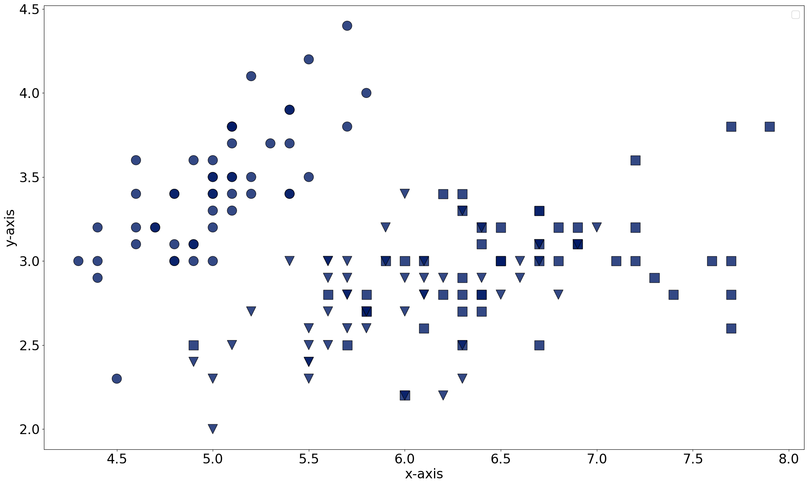
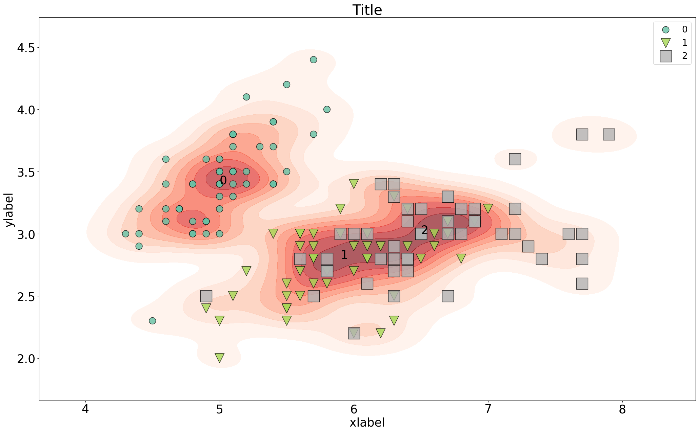
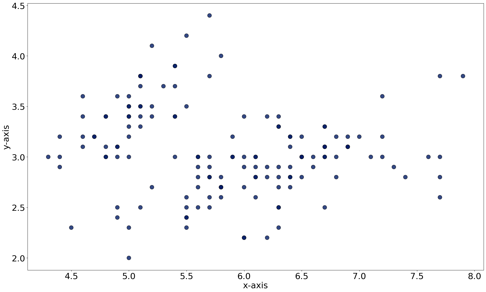
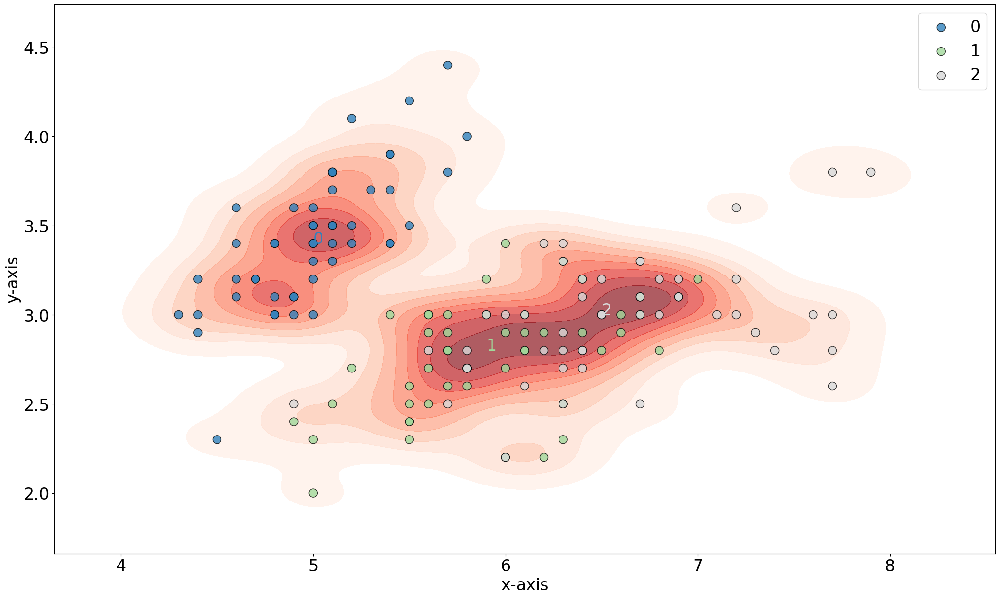
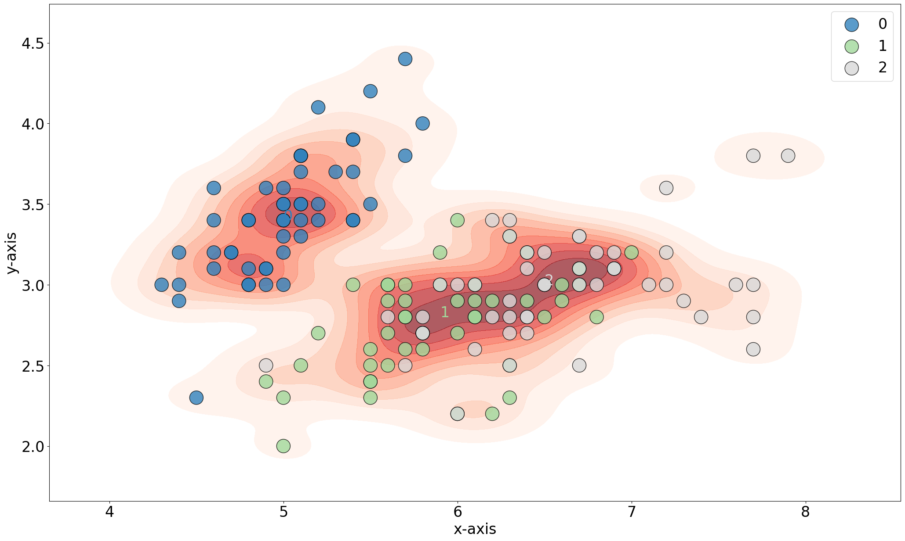
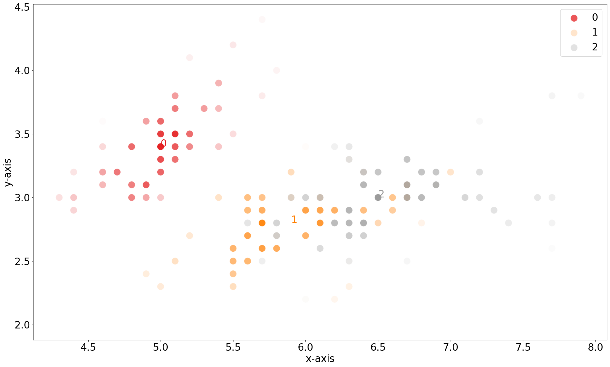

Quick Scatter
In the following example we will make a simple scatter plot using all default parameters.
# Import example iris dataet
from sklearn import datasets
iris = datasets.load_iris()
X = iris.data[:, :2]
labels = iris.target
# Load library
from scatterd import scatterd
# Scatter the results
fig, ax = scatterd(X[:,0], X[:,1])
 |
Coloring Dots
Coloring the dots can using RGB values or standard strings, such as ‘r’, ‘k’ etc
# Color dots in red
fig, ax = scatterd(X[:,0], X[:,1], c=[1,0,0], grid=True)
 |
Coloring Class Label Fonts
Coloring the dots can using RGB values or standard strings, such as ‘r’, ‘k’ etc
# Fontcolor in red
fig, ax = scatterd(X[:,0], X[:,1], edgecolor='k', fontcolor=[0,0,0], fontsize=26)
# Fontcolor red
fig, ax = scatterd(X[:,0], X[:,1], edgecolor='k', fontcolor='r', fontsize=26)
 |
Coloring on classlabels
Coloring the dots on the input class labels.
# Color on classlabels
fig, ax = scatterd(X[:,0], X[:,1], labels=labels, edgecolor='k', fontcolor=[0,0,0], fontsize=26)
# Change color using the cmap
fig, ax = scatterd(X[:,0], X[:,1], labels=labels, edgecolor='k', fontcolor=[0,0,0], fontsize=26, cmap='Set2')
|
|


Overlay with Kernel Density
Overlay the scatterplot with kernel densities.
# Add density to plot
fig, ax = scatterd(X[:,0], X[:,1], density=True)
# Color the classlabels
fig, ax = scatterd(X[:,0], X[:,1], labels=labels, density=True)
# Increase dot sizes
fig, ax = scatterd(X[:,0], X[:,1], labels=labels, density=True, s=500)
# Change various parameters
fig, ax = scatterd(X[:,0], X[:,1], labels=labels, s=s, cmap='Set2', xlabel='xlabel', ylabel='ylabel', title='Title', fontsize=25, density=True, fontcolor=[0,0,0])
|
 |
 |
|


Gradient
Add gradient based on kernel density. It starts with the color in the highest density will transition towards the gradient color.
# Add gradient
fig, ax = scatterd(X[:,0], X[:,1], labels=labels, verbose=4, gradient='#ffffff', edgecolor='#ffffff', s=300, cmap='Set1')
# Add gradient with density
fig, ax = scatterd(X[:,0], X[:,1], labels=labels, verbose=4, gradient='#ffffff', edgecolor='#ffffff', s=300, cmap='Set1', density=True)
# Add gradient with density and marker but remove the labels
fig, ax = scatterd(X[:,0], X[:,1], labels=None, marker=labels, verbose=4, gradient='#ffffff', edgecolor='#ffffff', s=300, cmap='Set2', density=True)
# Add gradient with density and markers and alpha
import matplotlib as mpl
custom_cmap = mpl.colors.ListedColormap(['green', 'black', 'blue'])
s = (labels+1) * 200
random_integers = np.random.randint(0, len(s), size=X.shape[0])
alpha = np.random.rand(1, X.shape[0])[0][random_integers]
fig, ax = scatterd(X[:,0], X[:,1], labels=labels, marker=labels, gradient='#ffffff', edgecolor='#ffffff', s=s, density=True, alpha=alpha, cmap=custom_cmap)
 |
|
|

Customized colormap
Overlay the scatterplot with kernel densities.
# Change various parameters
args_density = {'fill':True, 'thresh': 0, 'levels': 100, 'cmap':"mako"}
# Scatter
fig, ax = scatterd(X[:,0], X[:,1], labels=labels, s=s, cmap='Set2', xlabel='xlabel', ylabel='ylabel', title='Title', fontsize=25, density=True, fontcolor=[0,0,0], grid=None, args_density=args_density)
|